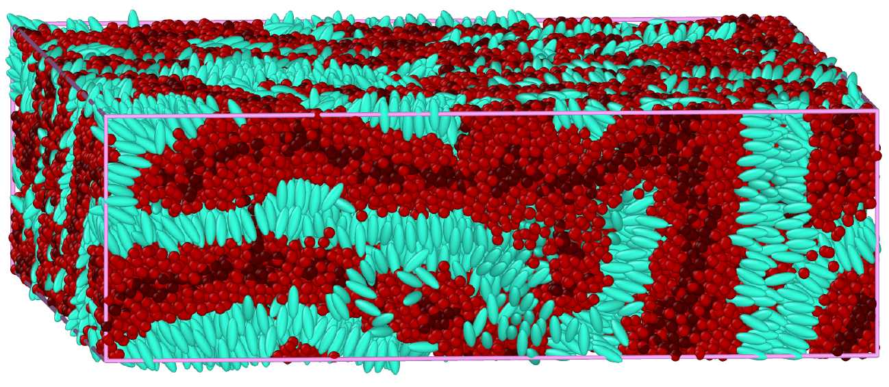

SIMULATING LIQUID CRYSTAL POLYMERS

In this work, we use molecular dynamics to simulate the cooling of liquid polymers. In particular, we analyze the effect of polymer architecture on mesophase formation. This project was completed with Dr. Diego Becerra and Dr. Lisa Hall.